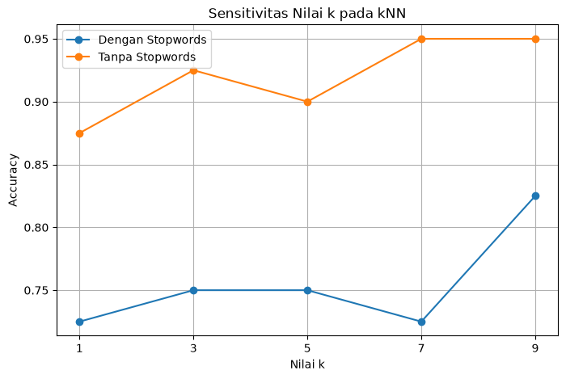
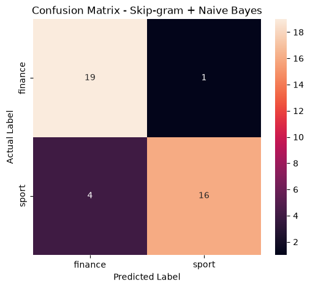
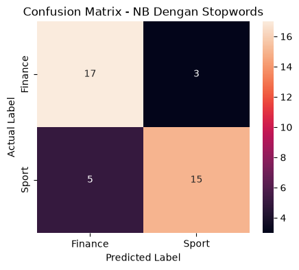
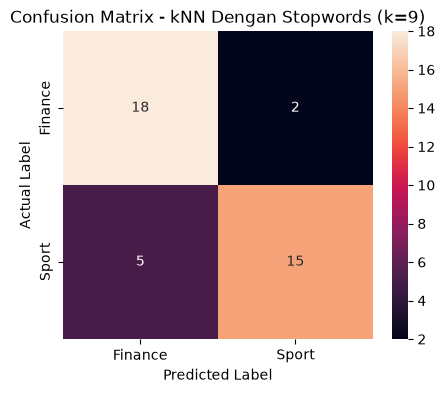
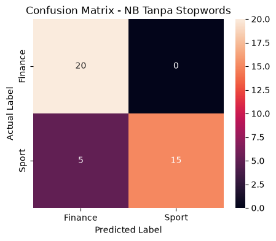
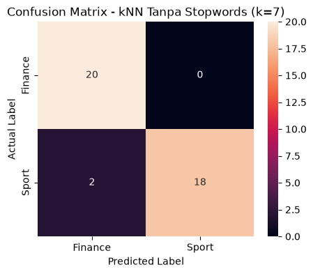
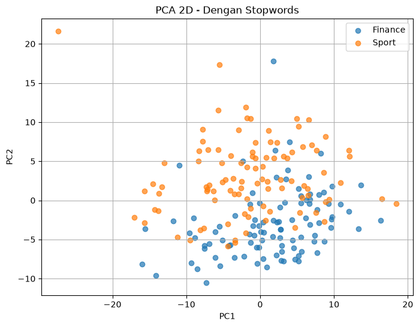

Tugas 4: Klasifikasi Teks Berita Menggunakan Word Embedding Skip-gram#
Co-occurrence Matrix + SVD, Naive Bayes, dan k-Nearest Neighbors (kNN)#
Pada tugas ini dilakukan klasifikasi teks berita menggunakan representasi word embedding berbasis Co-occurrence Matrix dan Singular Value Decomposition (SVD).
Klasifikasi dilakukan menggunakan dua algoritma:
Gaussian Naive Bayes
k-Nearest Neighbors (kNN)
Eksperimen dilakukan dalam dua skenario preprocessing:
Dengan Stopwords
Tanpa Stopwords
1. Install Library#
Library yang digunakan pada tugas ini adalah:
pandas untuk membaca dan mengolah dataset
numpy untuk operasi numerik
gensim untuk Word2Vec Skip-gram
scikit-learn untuk pembagian data dan Naive Bayes
matplotlib dan seaborn untuk visualisasi evaluasi
openpyxl untuk membaca dan menyimpan file Excel
%pip install pandas numpy scikit-learn matplotlib seaborn openpyxl Sastrawi
Requirement already satisfied: pandas in /workspaces/PPW/envwebmining/lib/python3.14/site-packages (3.0.5)
Requirement already satisfied: numpy in /workspaces/PPW/envwebmining/lib/python3.14/site-packages (2.5.3)
Requirement already satisfied: scikit-learn in /workspaces/PPW/envwebmining/lib/python3.14/site-packages (1.9.1)
Requirement already satisfied: matplotlib in /workspaces/PPW/envwebmining/lib/python3.14/site-packages (3.11.2)
Requirement already satisfied: seaborn in /workspaces/PPW/envwebmining/lib/python3.14/site-packages (0.13.2)
Requirement already satisfied: openpyxl in /workspaces/PPW/envwebmining/lib/python3.14/site-packages (3.1.5)
Requirement already satisfied: Sastrawi in /workspaces/PPW/envwebmining/lib/python3.14/site-packages (1.0.1)
Requirement already satisfied: python-dateutil>=2.8.2 in /workspaces/PPW/envwebmining/lib/python3.14/site-packages (from pandas) (2.9.0.post0)
Requirement already satisfied: scipy>=1.10.0 in /workspaces/PPW/envwebmining/lib/python3.14/site-packages (from scikit-learn) (1.18.1)
Requirement already satisfied: joblib>=1.4.0 in /workspaces/PPW/envwebmining/lib/python3.14/site-packages (from scikit-learn) (1.6.0)
Requirement already satisfied: narwhals>=2.0.1 in /workspaces/PPW/envwebmining/lib/python3.14/site-packages (from scikit-learn) (2.26.0)
Requirement already satisfied: threadpoolctl>=3.5.0 in /workspaces/PPW/envwebmining/lib/python3.14/site-packages (from scikit-learn) (3.7.0)
Requirement already satisfied: contourpy>=1.0.1 in /workspaces/PPW/envwebmining/lib/python3.14/site-packages (from matplotlib) (1.4.0)
Requirement already satisfied: cycler>=0.10 in /workspaces/PPW/envwebmining/lib/python3.14/site-packages (from matplotlib) (0.12.1)
Requirement already satisfied: fonttools>=4.28.2 in /workspaces/PPW/envwebmining/lib/python3.14/site-packages (from matplotlib) (4.66.1)
Requirement already satisfied: kiwisolver>=1.3.1 in /workspaces/PPW/envwebmining/lib/python3.14/site-packages (from matplotlib) (1.5.1)
Requirement already satisfied: packaging>=20.0 in /workspaces/PPW/envwebmining/lib/python3.14/site-packages (from matplotlib) (26.3)
Requirement already satisfied: pillow>=9 in /workspaces/PPW/envwebmining/lib/python3.14/site-packages (from matplotlib) (12.3.0)
Requirement already satisfied: pyparsing>=3 in /workspaces/PPW/envwebmining/lib/python3.14/site-packages (from matplotlib) (3.3.3)
Requirement already satisfied: et-xmlfile in /workspaces/PPW/envwebmining/lib/python3.14/site-packages (from openpyxl) (2.0.0)
Requirement already satisfied: cloudpickle>=3.0 in /workspaces/PPW/envwebmining/lib/python3.14/site-packages (from joblib>=1.4.0->scikit-learn) (3.1.2)
Requirement already satisfied: six>=1.5 in /workspaces/PPW/envwebmining/lib/python3.14/site-packages (from python-dateutil>=2.8.2->pandas) (1.17.0)
[notice] A new release of pip is available: 25.3 -> 26.2.1
[notice] To update, run: pip install --upgrade pip
Note: you may need to restart the kernel to use updated packages.
2. Import Library#
Library digunakan untuk proses preprocessing, pembentukan Co-occurrence Matrix, reduksi dimensi menggunakan SVD, klasifikasi Naive Bayes, k-Nearest Neighbors, serta evaluasi model.
import re
import unicodedata
import numpy as np
import pandas as pd
import matplotlib.pyplot as plt
import seaborn as sns
from collections import Counter
from Sastrawi.StopWordRemover.StopWordRemoverFactory import (
StopWordRemoverFactory
)
from sklearn.model_selection import train_test_split
from sklearn.decomposition import TruncatedSVD
from sklearn.decomposition import PCA
from sklearn.naive_bayes import GaussianNB
from sklearn.neighbors import KNeighborsClassifier
from sklearn.metrics import (
accuracy_score,
precision_score,
recall_score,
f1_score,
confusion_matrix,
classification_report
)
from IPython.display import display
3. Konfigurasi Parameter#
Parameter digunakan agar proses eksperimen pada kedua skenario menggunakan konfigurasi yang sama.
Parameter utama:
Embedding dimension = 12
Window size = 2
Top vocabulary = 150
Test size = 20%
Random state = 42
Nilai k = 1, 3, 5, 7, 9
EMBEDDING_DIM = 12
WINDOW_SIZE = 2
TOP_VOCAB = 150
TEST_SIZE = 0.2
RANDOM_STATE = 42
K_VALUES = [1, 3, 5, 7, 9]
print("Embedding dimension :", EMBEDDING_DIM)
print("Window size :", WINDOW_SIZE)
print("Top vocabulary :", TOP_VOCAB)
print("Test size :", TEST_SIZE)
print("Random state :", RANDOM_STATE)
print("K values :", K_VALUES)
Embedding dimension : 12
Window size : 2
Top vocabulary : 150
Test size : 0.2
Random state : 42
K values : [1, 3, 5, 7, 9]
4. Membaca Dataset#
Dataset yang digunakan adalah dataset berita yang terdiri dari 200 berita dengan dua kategori, yaitu Sport dan Finance.
DATA_PATH = "dataset_detik_200_berita.xlsx"
df = pd.read_excel(
DATA_PATH
)
print(
"Shape dataset:",
df.shape
)
display(
df.head()
)
Shape dataset: (200, 3)
| id | isi_berita | label | |
|---|---|---|---|
| 0 | 1 | Dalam dua seri terakhir MotoGP 2027, Marc Marq... | sport |
| 1 | 2 | Alwi Farhan, Moh Zaki Ubaidillah dan Muhamad Y... | sport |
| 2 | 3 | Di tengah viral insiden cepirit pada ajang Hyr... | sport |
| 3 | 4 | Dejan Fedinansyah/Felisha Alberta Nathaniel Pa... | sport |
| 4 | 5 | Bagas Maulana/Apriyani Rahayu tak minder meski... | sport |
5. Pemeriksaan Dataset#
print("Informasi dataset:")
df.info()
print("\nJumlah nilai kosong:")
print(
df[
["id", "isi_berita", "label"]
].isnull().sum()
)
print("\nDistribusi label:")
print(
df["label"].value_counts()
)
Informasi dataset:
<class 'pandas.DataFrame'>
RangeIndex: 200 entries, 0 to 199
Data columns (total 3 columns):
# Column Non-Null Count Dtype
--- ------ -------------- -----
0 id 200 non-null int64
1 isi_berita 200 non-null str
2 label 200 non-null str
dtypes: int64(1), str(2)
memory usage: 4.8 KB
Jumlah nilai kosong:
id 0
isi_berita 0
label 0
dtype: int64
Distribusi label:
label
sport 100
finance 100
Name: count, dtype: int64
6. Mengubah Label Menjadi Numerik#
Mapping label yang digunakan:
finance = 0
sport = 1
df["label_num"] = df["label"].map({
"finance": 0,
"sport": 1
})
print("Mapping label:")
print("finance = 0")
print("sport = 1")
print("\nDistribusi label:")
print(
df["label_num"].value_counts().sort_index()
)
Mapping label:
finance = 0
sport = 1
Distribusi label:
label_num
0 100
1 100
Name: count, dtype: int64
7. Menghitung Jumlah Kata Sebelum Preprocessing#
Jumlah kata dihitung sebelum preprocessing untuk mengetahui kondisi awal dataset.
df["jumlah_kata_asli"] = (
df["isi_berita"]
.astype(str)
.apply(
lambda x: len(x.split())
)
)
print(
"Total seluruh kata:",
df["jumlah_kata_asli"].sum()
)
print("\nStatistik jumlah kata:")
print(
df["jumlah_kata_asli"].describe()
)
Total seluruh kata: 67076
Statistik jumlah kata:
count 200.000000
mean 335.380000
std 161.031304
min 42.000000
25% 241.000000
50% 303.000000
75% 392.250000
max 963.000000
Name: jumlah_kata_asli, dtype: float64
8. Preprocessing Dasar#
Preprocessing dasar dilakukan dengan menghilangkan tanda baca.
Setelah preprocessing dasar, data digunakan untuk dua skenario:
Dengan Stopwords
Tanpa Stopwords
def remove_punctuation(text):
text = str(text)
text = "".join(
char
for char in text
if not unicodedata.category(char).startswith("P")
)
text = re.sub(
r"\s+",
" ",
text
).strip()
return text
df["berita_clean"] = (
df["isi_berita"]
.apply(remove_punctuation)
)
display(
df[
[
"id",
"isi_berita",
"berita_clean",
"label"
]
].head()
)
| id | isi_berita | berita_clean | label | |
|---|---|---|---|---|
| 0 | 1 | Dalam dua seri terakhir MotoGP 2027, Marc Marq... | Dalam dua seri terakhir MotoGP 2027 Marc Marqu... | sport |
| 1 | 2 | Alwi Farhan, Moh Zaki Ubaidillah dan Muhamad Y... | Alwi Farhan Moh Zaki Ubaidillah dan Muhamad Yu... | sport |
| 2 | 3 | Di tengah viral insiden cepirit pada ajang Hyr... | Di tengah viral insiden cepirit pada ajang Hyr... | sport |
| 3 | 4 | Dejan Fedinansyah/Felisha Alberta Nathaniel Pa... | Dejan FedinansyahFelisha Alberta Nathaniel Pas... | sport |
| 4 | 5 | Bagas Maulana/Apriyani Rahayu tak minder meski... | Bagas MaulanaApriyani Rahayu tak minder meski ... | sport |
9. Menghitung Jumlah Kata Setelah Preprocessing Dasar#
# Menghitung jumlah kata sebelum preprocessing
df["jumlah_kata_asli"] = (
df["isi_berita"]
.astype(str)
.apply(lambda x: len(x.split()))
)
# Menghitung jumlah kata setelah preprocessing
df["jumlah_kata_clean"] = (
df["berita_clean"]
.astype(str)
.apply(lambda x: len(x.split()))
)
print(
"Total kata sebelum preprocessing:",
df["jumlah_kata_asli"].sum()
)
print(
"Total kata setelah preprocessing:",
df["jumlah_kata_clean"].sum()
)
Total kata sebelum preprocessing: 67076
Total kata setelah preprocessing: 66885
10. Pembagian Data Training dan Testing#
Dataset dibagi menjadi:
160 data training
40 data testing
Pembagian dilakukan menggunakan stratified split agar distribusi kelas tetap seimbang pada data training dan testing.
X_text_train, X_text_test, y_train, y_test = train_test_split(
df["berita_clean"],
df["label_num"],
test_size=TEST_SIZE,
random_state=RANDOM_STATE,
stratify=df["label_num"]
)
print("Jumlah data training:", len(X_text_train))
print("Jumlah data testing :", len(X_text_test))
print("\nDistribusi training:")
print(y_train.value_counts().sort_index())
print("\nDistribusi testing:")
print(y_test.value_counts().sort_index())
Jumlah data training: 160
Jumlah data testing : 40
Distribusi training:
label_num
0 80
1 80
Name: count, dtype: int64
Distribusi testing:
label_num
0 20
1 20
Name: count, dtype: int64
11. Tokenisasi#
Setiap berita diubah menjadi kumpulan token atau kata menggunakan pemisahan berdasarkan spasi.
def tokenize(text):
return str(text).split()
train_tokens_basic = [
tokenize(text)
for text in X_text_train
]
test_tokens_basic = [
tokenize(text)
for text in X_text_test
]
print("Contoh tokenisasi:")
print(train_tokens_basic[0][:30])
Contoh tokenisasi:
['Mantan', 'Menteri', 'Keuangan', 'Purbaya', 'Yudhi', 'Sadewa', 'menegaskan', 'seluruh', 'urusan', 'yang', 'berkaitan', 'dengan', 'kesepakatan', 'peralihan', 'handover', 'serta', 'penanganan', 'utang', 'proyek', 'Kereta', 'Cepat', 'JakartaBandung', 'Whoosh', 'kini', 'sepenuhnya', 'diserahkan', 'kepada', 'Bendahara', 'Negara', 'yang']
12. Daftar Stopwords Bahasa Indonesia#
Daftar stopwords diperoleh menggunakan Sastrawi.
Daftar stopwords digunakan pada Skenario 2.
factory = StopWordRemoverFactory()
stopwords = set(
factory.get_stop_words()
)
print("Jumlah stopwords:", len(stopwords))
print("\nContoh stopwords:")
print(list(stopwords)[:30])
Jumlah stopwords: 123
Contoh stopwords:
['tapi', 'dst', 'sampai', 'kepada', 'dapat', 'oleh', 'boleh', 'ok', 'saya', 'lain', 'sementara', 'namun', 'serta', 'juga', 'ketika', 'di', 'pasti', 'pada', 'dia', 'sebetulnya', 'bisa', 'para', 'sambil', 'begitu', 'sehingga', 'terhadap', 'saat', 'dengan', 'ke', 'untuk']
13. Membuat Dua Skenario Corpus#
Skenario 1: Dengan Stopwords#
Stopwords tetap dipertahankan.
Skenario 2: Tanpa Stopwords#
Stopwords Bahasa Indonesia dihapus dari token.
def remove_stopwords(tokens, stopwords):
return [
word
for word in tokens
if word not in stopwords
]
# Skenario 1: Dengan Stopwords
train_tokens_with_sw = train_tokens_basic
test_tokens_with_sw = test_tokens_basic
# Skenario 2: Tanpa Stopwords
train_tokens_without_sw = [
remove_stopwords(tokens, stopwords)
for tokens in train_tokens_basic
]
test_tokens_without_sw = [
remove_stopwords(tokens, stopwords)
for tokens in test_tokens_basic
]
print("Contoh Skenario 1 - Dengan Stopwords:")
print(train_tokens_with_sw[0][:30])
print("\nContoh Skenario 2 - Tanpa Stopwords:")
print(train_tokens_without_sw[0][:30])
Contoh Skenario 1 - Dengan Stopwords:
['Mantan', 'Menteri', 'Keuangan', 'Purbaya', 'Yudhi', 'Sadewa', 'menegaskan', 'seluruh', 'urusan', 'yang', 'berkaitan', 'dengan', 'kesepakatan', 'peralihan', 'handover', 'serta', 'penanganan', 'utang', 'proyek', 'Kereta', 'Cepat', 'JakartaBandung', 'Whoosh', 'kini', 'sepenuhnya', 'diserahkan', 'kepada', 'Bendahara', 'Negara', 'yang']
Contoh Skenario 2 - Tanpa Stopwords:
['Mantan', 'Menteri', 'Keuangan', 'Purbaya', 'Yudhi', 'Sadewa', 'menegaskan', 'seluruh', 'urusan', 'berkaitan', 'kesepakatan', 'peralihan', 'handover', 'penanganan', 'utang', 'proyek', 'Kereta', 'Cepat', 'JakartaBandung', 'Whoosh', 'kini', 'sepenuhnya', 'diserahkan', 'Bendahara', 'Negara', 'baru', 'Suahasil', 'Nazara', 'Purbaya', 'menyatakan']
14. Statistik Corpus#
Statistik corpus digunakan untuk melihat perbedaan jumlah token dan vocabulary antara Skenario 1 dan Skenario 2.
def corpus_statistics(tokenized_documents):
total_tokens = sum(
len(tokens)
for tokens in tokenized_documents
)
vocabulary = set(
word
for tokens in tokenized_documents
for word in tokens
)
return {
"total_tokens": total_tokens,
"vocabulary": len(vocabulary)
}
stats_with_sw = corpus_statistics(
train_tokens_with_sw
)
stats_without_sw = corpus_statistics(
train_tokens_without_sw
)
df_corpus_stats = pd.DataFrame({
"Skenario": [
"Dengan Stopwords",
"Tanpa Stopwords"
],
"Total Token": [
stats_with_sw["total_tokens"],
stats_without_sw["total_tokens"]
],
"Vocabulary": [
stats_with_sw["vocabulary"],
stats_without_sw["vocabulary"]
]
})
display(df_corpus_stats)
| Skenario | Total Token | Vocabulary | |
|---|---|---|---|
| 0 | Dengan Stopwords | 53142 | 8282 |
| 1 | Tanpa Stopwords | 41831 | 8181 |
15. Membentuk Vocabulary#
Vocabulary dibentuk berdasarkan kata-kata yang terdapat pada data training.
Kata dengan frekuensi tertinggi digunakan untuk membentuk Co-occurrence Matrix.
Jumlah vocabulary yang digunakan dibatasi sebanyak 150 kata.
def build_vocabulary(
tokenized_documents,
top_vocab
):
counter = Counter()
for tokens in tokenized_documents:
counter.update(tokens)
most_common = counter.most_common(
top_vocab
)
vocabulary = [
word
for word, count in most_common
]
word_to_index = {
word: i
for i, word in enumerate(vocabulary)
}
return (
vocabulary,
word_to_index,
counter
)
16. Membentuk Co-occurrence Matrix#
Co-occurrence Matrix digunakan untuk merepresentasikan hubungan kemunculan antara kata target dan kata context.
Kata yang berada di sekitar kata target dalam window tertentu akan dihitung sebagai kata context.
Window size yang digunakan adalah 2.
def build_cooccurrence_matrix(
tokenized_documents,
word_to_index,
window_size
):
vocab_size = len(word_to_index)
matrix = np.zeros(
(
vocab_size,
vocab_size
),
dtype=np.float64
)
for tokens in tokenized_documents:
for i, target_word in enumerate(tokens):
if target_word not in word_to_index:
continue
target_index = word_to_index[
target_word
]
start = max(
0,
i - window_size
)
end = min(
len(tokens),
i + window_size + 1
)
for j in range(
start,
end
):
if i == j:
continue
context_word = tokens[j]
if context_word not in word_to_index:
continue
context_index = word_to_index[
context_word
]
matrix[
target_index,
context_index
] += 1
return matrix
17. Reduksi Dimensi Menggunakan SVD#
Co-occurrence Matrix memiliki ukuran sebesar jumlah vocabulary.
Singular Value Decomposition (SVD) digunakan untuk mereduksi Co-occurrence Matrix menjadi representasi word embedding dengan dimensi yang lebih kecil.
Dimensi embedding yang digunakan adalah 12.
def build_svd_embedding(
cooccurrence_matrix,
embedding_dim
):
svd = TruncatedSVD(
n_components=embedding_dim,
random_state=RANDOM_STATE
)
embedding = svd.fit_transform(
cooccurrence_matrix
)
return (
embedding,
svd
)
18. Mean Pooling#
Setiap kata telah memiliki representasi vektor hasil SVD.
Untuk memperoleh satu representasi vektor bagi setiap berita, seluruh vektor kata yang terdapat dalam berita dirata-ratakan menggunakan metode mean pooling.
def document_mean_pooling(
tokens,
word_to_index,
embedding
):
vectors = []
for word in tokens:
if word in word_to_index:
index = word_to_index[word]
vectors.append(
embedding[index]
)
if len(vectors) == 0:
return np.zeros(
embedding.shape[1]
)
return np.mean(
vectors,
axis=0
)
19. Fungsi Pemrosesan Skenario#
Fungsi ini menjalankan tahapan:
Tokenisasi → Vocabulary → Co-occurrence Matrix → SVD → Word Embedding → Mean Pooling
Fungsi digunakan pada Skenario 1 dan Skenario 2.
def process_scenario(
train_tokens,
test_tokens,
scenario_name
):
print("=" * 70)
print(
f"MEMPROSES: {scenario_name}"
)
print("=" * 70)
# Membentuk vocabulary
vocabulary, word_to_index, counter = (
build_vocabulary(
train_tokens,
TOP_VOCAB
)
)
print(
"Jumlah vocabulary:",
len(vocabulary)
)
# Membentuk Co-occurrence Matrix
cooccurrence_matrix = (
build_cooccurrence_matrix(
train_tokens,
word_to_index,
WINDOW_SIZE
)
)
print(
"Shape Co-occurrence Matrix:",
cooccurrence_matrix.shape
)
# SVD
embedding, svd = (
build_svd_embedding(
cooccurrence_matrix,
EMBEDDING_DIM
)
)
print(
"Shape Word Embedding:",
embedding.shape
)
print(
"Total explained variance:",
svd.explained_variance_ratio_.sum()
)
# Mean Pooling data training
X_train = np.vstack([
document_mean_pooling(
tokens,
word_to_index,
embedding
)
for tokens in train_tokens
])
# Mean Pooling data testing
X_test = np.vstack([
document_mean_pooling(
tokens,
word_to_index,
embedding
)
for tokens in test_tokens
])
print(
"Shape X_train:",
X_train.shape
)
print(
"Shape X_test:",
X_test.shape
)
return {
"scenario": scenario_name,
"vocabulary": vocabulary,
"word_to_index": word_to_index,
"cooccurrence_matrix": cooccurrence_matrix,
"embedding": embedding,
"svd": svd,
"X_train": X_train,
"X_test": X_test
}
20. Skenario 1: Dengan Stopwords#
Pada skenario pertama, stopwords tetap dipertahankan.
Data training digunakan untuk membentuk vocabulary, Co-occurrence Matrix, SVD, dan word embedding.
Kemudian mean pooling digunakan untuk memperoleh representasi vektor dari setiap dokumen.
scenario_with_sw = process_scenario(
train_tokens_with_sw,
test_tokens_with_sw,
"Dengan Stopwords"
)
======================================================================
MEMPROSES: Dengan Stopwords
======================================================================
Jumlah vocabulary: 150
Shape Co-occurrence Matrix: (150, 150)
Shape Word Embedding: (150, 12)
Total explained variance: 0.6568664007178999
Shape X_train: (160, 12)
Shape X_test: (40, 12)
X_train_with_sw = (
scenario_with_sw["X_train"]
)
X_test_with_sw = (
scenario_with_sw["X_test"]
)
print(
"Shape X_train:",
X_train_with_sw.shape
)
print(
"Shape X_test:",
X_test_with_sw.shape
)
Shape X_train: (160, 12)
Shape X_test: (40, 12)
21. Naive Bayes - Dengan Stopwords#
Gaussian Naive Bayes digunakan untuk melakukan klasifikasi berita berdasarkan vektor dokumen hasil mean pooling.
nb_with_sw = GaussianNB()
nb_with_sw.fit(
X_train_with_sw,
y_train
)
y_pred_nb_with_sw = (
nb_with_sw.predict(
X_test_with_sw
)
)
print(
"Naive Bayes selesai."
)
Naive Bayes selesai.
22. Evaluasi Model#
Evaluasi dilakukan menggunakan:
Accuracy
Precision
Recall
F1-Score
def evaluate_model(
y_true,
y_pred,
model_name
):
return {
"Model": model_name,
"Accuracy": accuracy_score(
y_true,
y_pred
),
"Precision": precision_score(
y_true,
y_pred,
average="macro",
zero_division=0
),
"Recall": recall_score(
y_true,
y_pred,
average="macro",
zero_division=0
),
"F1": f1_score(
y_true,
y_pred,
average="macro",
zero_division=0
)
}
result_nb_with_sw = evaluate_model(
y_test,
y_pred_nb_with_sw,
"NB - Dengan Stopwords"
)
display(
pd.DataFrame(
[result_nb_with_sw]
)
)
| Model | Accuracy | Precision | Recall | F1 | |
|---|---|---|---|---|---|
| 0 | NB - Dengan Stopwords | 0.8 | 0.80303 | 0.8 | 0.799499 |
23. k-Nearest Neighbors - Dengan Stopwords#
kNN digunakan untuk melakukan klasifikasi berdasarkan jarak Euclidean.
Pengujian dilakukan menggunakan beberapa nilai k:
1, 3, 5, 7, dan 9.
knn_results_with_sw = []
knn_predictions_with_sw = {}
for k in K_VALUES:
knn = KNeighborsClassifier(
n_neighbors=k,
metric="euclidean"
)
knn.fit(
X_train_with_sw,
y_train
)
y_pred_knn = knn.predict(
X_test_with_sw
)
result = evaluate_model(
y_test,
y_pred_knn,
f"kNN k={k} - Dengan Stopwords"
)
knn_results_with_sw.append(
result
)
knn_predictions_with_sw[k] = (
y_pred_knn
)
df_knn_with_sw = pd.DataFrame(
knn_results_with_sw
)
display(
df_knn_with_sw
)
| Model | Accuracy | Precision | Recall | F1 | |
|---|---|---|---|---|---|
| 0 | kNN k=1 - Dengan Stopwords | 0.725 | 0.740000 | 0.725 | 0.720635 |
| 1 | kNN k=3 - Dengan Stopwords | 0.750 | 0.750000 | 0.750 | 0.750000 |
| 2 | kNN k=5 - Dengan Stopwords | 0.750 | 0.750000 | 0.750 | 0.750000 |
| 3 | kNN k=7 - Dengan Stopwords | 0.725 | 0.725564 | 0.725 | 0.724828 |
| 4 | kNN k=9 - Dengan Stopwords | 0.825 | 0.832481 | 0.825 | 0.824010 |
24. Skenario 2: Tanpa Stopwords#
Pada skenario kedua, stopwords Bahasa Indonesia dihapus menggunakan daftar stopwords dari Sastrawi.
Setelah proses penghapusan stopwords, dilakukan kembali pembentukan vocabulary, Co-occurrence Matrix, reduksi dimensi menggunakan SVD, word embedding, dan mean pooling.
scenario_without_sw = process_scenario(
train_tokens_without_sw,
test_tokens_without_sw,
"Tanpa Stopwords"
)
======================================================================
MEMPROSES: Tanpa Stopwords
======================================================================
Jumlah vocabulary: 150
Shape Co-occurrence Matrix: (150, 150)
Shape Word Embedding: (150, 12)
Total explained variance: 0.6244459406241137
Shape X_train: (160, 12)
Shape X_test: (40, 12)
X_train_without_sw = (
scenario_without_sw["X_train"]
)
X_test_without_sw = (
scenario_without_sw["X_test"]
)
print(
"Shape X_train:",
X_train_without_sw.shape
)
print(
"Shape X_test:",
X_test_without_sw.shape
)
Shape X_train: (160, 12)
Shape X_test: (40, 12)
25. Naive Bayes - Tanpa Stopwords#
Gaussian Naive Bayes digunakan untuk melakukan klasifikasi berita berdasarkan vektor dokumen hasil mean pooling pada Skenario 2.
nb_without_sw = GaussianNB()
nb_without_sw.fit(
X_train_without_sw,
y_train
)
y_pred_nb_without_sw = (
nb_without_sw.predict(
X_test_without_sw
)
)
print(
"Naive Bayes tanpa stopwords selesai."
)
Naive Bayes tanpa stopwords selesai.
26. Evaluasi Naive Bayes - Tanpa Stopwords#
result_nb_without_sw = evaluate_model(
y_test,
y_pred_nb_without_sw,
"NB - Tanpa Stopwords"
)
display(
pd.DataFrame(
[result_nb_without_sw]
)
)
| Model | Accuracy | Precision | Recall | F1 | |
|---|---|---|---|---|---|
| 0 | NB - Tanpa Stopwords | 0.875 | 0.9 | 0.875 | 0.873016 |
27. k-Nearest Neighbors - Tanpa Stopwords#
kNN digunakan dengan Euclidean distance.
Pengujian dilakukan menggunakan nilai k:
1, 3, 5, 7, dan 9.
knn_results_without_sw = []
knn_predictions_without_sw = {}
for k in K_VALUES:
knn = KNeighborsClassifier(
n_neighbors=k,
metric="euclidean"
)
knn.fit(
X_train_without_sw,
y_train
)
y_pred_knn = knn.predict(
X_test_without_sw
)
result = evaluate_model(
y_test,
y_pred_knn,
f"kNN k={k} - Tanpa Stopwords"
)
knn_results_without_sw.append(
result
)
knn_predictions_without_sw[k] = (
y_pred_knn
)
df_knn_without_sw = pd.DataFrame(
knn_results_without_sw
)
display(
df_knn_without_sw
)
| Model | Accuracy | Precision | Recall | F1 | |
|---|---|---|---|---|---|
| 0 | kNN k=1 - Tanpa Stopwords | 0.875 | 0.875940 | 0.875 | 0.874922 |
| 1 | kNN k=3 - Tanpa Stopwords | 0.925 | 0.926065 | 0.925 | 0.924953 |
| 2 | kNN k=5 - Tanpa Stopwords | 0.900 | 0.900000 | 0.900 | 0.900000 |
| 3 | kNN k=7 - Tanpa Stopwords | 0.950 | 0.954545 | 0.950 | 0.949875 |
| 4 | kNN k=9 - Tanpa Stopwords | 0.950 | 0.954545 | 0.950 | 0.949875 |
28. Sensitivitas Nilai k pada kNN#
Pengujian dilakukan untuk mengetahui perubahan performa kNN pada beberapa nilai k.
Nilai k yang digunakan adalah 1, 3, 5, 7, dan 9.
df_sensitivity_k = pd.DataFrame({
"k": K_VALUES,
"Accuracy_Dengan_Stopwords":
df_knn_with_sw["Accuracy"].values,
"Accuracy_Tanpa_Stopwords":
df_knn_without_sw["Accuracy"].values,
"F1_Dengan_Stopwords":
df_knn_with_sw["F1"].values,
"F1_Tanpa_Stopwords":
df_knn_without_sw["F1"].values
})
display(
df_sensitivity_k
)
| k | Accuracy_Dengan_Stopwords | Accuracy_Tanpa_Stopwords | F1_Dengan_Stopwords | F1_Tanpa_Stopwords | |
|---|---|---|---|---|---|
| 0 | 1 | 0.725 | 0.875 | 0.720635 | 0.874922 |
| 1 | 3 | 0.750 | 0.925 | 0.750000 | 0.924953 |
| 2 | 5 | 0.750 | 0.900 | 0.750000 | 0.900000 |
| 3 | 7 | 0.725 | 0.950 | 0.724828 | 0.949875 |
| 4 | 9 | 0.825 | 0.950 | 0.824010 | 0.949875 |
29. Visualisasi Sensitivitas Nilai k#
plt.figure(
figsize=(8, 5)
)
plt.plot(
K_VALUES,
df_knn_with_sw["Accuracy"],
marker="o",
label="Dengan Stopwords"
)
plt.plot(
K_VALUES,
df_knn_without_sw["Accuracy"],
marker="o",
label="Tanpa Stopwords"
)
plt.xlabel(
"Nilai k"
)
plt.ylabel(
"Accuracy"
)
plt.title(
"Sensitivitas Nilai k pada kNN"
)
plt.xticks(
K_VALUES
)
plt.legend()
plt.grid(
True
)
plt.show()

print(
classification_report(
y_test_nb,
y_pred,
target_names=[
"finance",
"sport"
],
zero_division=0
)
)
---------------------------------------------------------------------------
NameError Traceback (most recent call last)
Cell In[33], line 3
1 print(
2 classification_report(
----> 3 y_test_nb,
4 y_pred,
5 target_names=[
6 "finance",
NameError: name 'y_test_nb' is not defined
30. Nilai k untuk Evaluasi kNN#
Nilai k dengan Accuracy tertinggi pada masing-masing skenario digunakan untuk menampilkan confusion matrix kNN.
best_k_with_sw_value = int(
K_VALUES[
df_knn_with_sw["Accuracy"]
.values.argmax()
]
)
best_k_without_sw_value = int(
K_VALUES[
df_knn_without_sw["Accuracy"]
.values.argmax()
]
)
print(
"Nilai k berdasarkan Accuracy Skenario 1:",
best_k_with_sw_value
)
print(
"Nilai k berdasarkan Accuracy Skenario 2:",
best_k_without_sw_value
)
Nilai k berdasarkan Accuracy Skenario 1: 9
Nilai k berdasarkan Accuracy Skenario 2: 7
plt.figure(
figsize=(6, 5)
)
sns.heatmap(
cm,
annot=True,
fmt="d",
xticklabels=[
"finance",
"sport"
],
yticklabels=[
"finance",
"sport"
]
)
plt.xlabel(
"Predicted Label"
)
plt.ylabel(
"Actual Label"
)
plt.title(
"Confusion Matrix - Skip-gram + Naive Bayes"
)
plt.show()

31. Perbandingan Hasil Eksperimen#
Hasil klasifikasi dibandingkan berdasarkan:
Accuracy
Precision
Recall
F1-Score
Perbandingan meliputi:
Naive Bayes dengan Stopwords
kNN dengan Stopwords
Naive Bayes tanpa Stopwords
kNN tanpa Stopwords
best_knn_row_with_sw = (
df_knn_with_sw
.sort_values(
"Accuracy",
ascending=False
)
.iloc[0]
)
best_knn_row_without_sw = (
df_knn_without_sw
.sort_values(
"Accuracy",
ascending=False
)
.iloc[0]
)
comparison_results = [
result_nb_with_sw,
{
"Model": best_knn_row_with_sw["Model"],
"Accuracy": best_knn_row_with_sw["Accuracy"],
"Precision": best_knn_row_with_sw["Precision"],
"Recall": best_knn_row_with_sw["Recall"],
"F1": best_knn_row_with_sw["F1"]
},
result_nb_without_sw,
{
"Model": best_knn_row_without_sw["Model"],
"Accuracy": best_knn_row_without_sw["Accuracy"],
"Precision": best_knn_row_without_sw["Precision"],
"Recall": best_knn_row_without_sw["Recall"],
"F1": best_knn_row_without_sw["F1"]
}
]
df_comparison = pd.DataFrame(
comparison_results
)
display(
df_comparison
)
| Model | Accuracy | Precision | Recall | F1 | |
|---|---|---|---|---|---|
| 0 | NB - Dengan Stopwords | 0.800 | 0.803030 | 0.800 | 0.799499 |
| 1 | kNN k=9 - Dengan Stopwords | 0.825 | 0.832481 | 0.825 | 0.824010 |
| 2 | NB - Tanpa Stopwords | 0.875 | 0.900000 | 0.875 | 0.873016 |
| 3 | kNN k=9 - Tanpa Stopwords | 0.950 | 0.954545 | 0.950 | 0.949875 |
32. Confusion Matrix#
Confusion matrix digunakan untuk melihat jumlah prediksi benar dan salah pada masing-masing kelas.
Kelas yang digunakan:
Finance
Sport
cm_nb_with_sw = confusion_matrix(
y_test,
y_pred_nb_with_sw,
labels=[0, 1]
)
plt.figure(
figsize=(5, 4)
)
sns.heatmap(
cm_nb_with_sw,
annot=True,
fmt="d",
xticklabels=[
"Finance",
"Sport"
],
yticklabels=[
"Finance",
"Sport"
]
)
plt.xlabel(
"Predicted Label"
)
plt.ylabel(
"Actual Label"
)
plt.title(
"Confusion Matrix - NB Dengan Stopwords"
)
plt.show()

#Confusion matrix kNN dengan stopwords.
y_pred_best_knn_with_sw = (
knn_predictions_with_sw[
best_k_with_sw_value
]
)
cm_knn_with_sw = confusion_matrix(
y_test,
y_pred_best_knn_with_sw,
labels=[0, 1]
)
plt.figure(
figsize=(5, 4)
)
sns.heatmap(
cm_knn_with_sw,
annot=True,
fmt="d",
xticklabels=[
"Finance",
"Sport"
],
yticklabels=[
"Finance",
"Sport"
]
)
plt.xlabel(
"Predicted Label"
)
plt.ylabel(
"Actual Label"
)
plt.title(
f"Confusion Matrix - kNN Dengan Stopwords (k={best_k_with_sw_value})"
)
plt.show()

#Confusion matrix NB tanpa stopwords.
cm_nb_without_sw = confusion_matrix(
y_test,
y_pred_nb_without_sw,
labels=[0, 1]
)
plt.figure(
figsize=(5, 4)
)
sns.heatmap(
cm_nb_without_sw,
annot=True,
fmt="d",
xticklabels=[
"Finance",
"Sport"
],
yticklabels=[
"Finance",
"Sport"
]
)
plt.xlabel(
"Predicted Label"
)
plt.ylabel(
"Actual Label"
)
plt.title(
"Confusion Matrix - NB Tanpa Stopwords"
)
plt.show()

#Confusion matrix kNN tanpa stopwords.
y_pred_best_knn_without_sw = (
knn_predictions_without_sw[
best_k_without_sw_value
]
)
cm_knn_without_sw = confusion_matrix(
y_test,
y_pred_best_knn_without_sw,
labels=[0, 1]
)
plt.figure(
figsize=(5, 4)
)
sns.heatmap(
cm_knn_without_sw,
annot=True,
fmt="d",
xticklabels=[
"Finance",
"Sport"
],
yticklabels=[
"Finance",
"Sport"
]
)
plt.xlabel(
"Predicted Label"
)
plt.ylabel(
"Actual Label"
)
plt.title(
f"Confusion Matrix - kNN Tanpa Stopwords (k={best_k_without_sw_value})"
)
plt.show()

# 33. Classification Report
Classification Report digunakan untuk melihat Precision, Recall,
F1-Score, dan jumlah data pada masing-masing kelas.
print(
"=== NAIVE BAYES DENGAN STOPWORDS ==="
)
print(
classification_report(
y_test,
y_pred_nb_with_sw,
target_names=[
"Finance",
"Sport"
],
zero_division=0
)
)
print(
"\n=== NAIVE BAYES TANPA STOPWORDS ==="
)
print(
classification_report(
y_test,
y_pred_nb_without_sw,
target_names=[
"Finance",
"Sport"
],
zero_division=0
)
)
print(
"\n=== kNN DENGAN STOPWORDS ==="
)
print(
classification_report(
y_test,
y_pred_best_knn_with_sw,
target_names=[
"Finance",
"Sport"
],
zero_division=0
)
)
print(
"\n=== kNN TANPA STOPWORDS ==="
)
print(
classification_report(
y_test,
y_pred_best_knn_without_sw,
target_names=[
"Finance",
"Sport"
],
zero_division=0
)
)
=== NAIVE BAYES DENGAN STOPWORDS ===
precision recall f1-score support
Finance 0.77 0.85 0.81 20
Sport 0.83 0.75 0.79 20
accuracy 0.80 40
macro avg 0.80 0.80 0.80 40
weighted avg 0.80 0.80 0.80 40
=== NAIVE BAYES TANPA STOPWORDS ===
precision recall f1-score support
Finance 0.80 1.00 0.89 20
Sport 1.00 0.75 0.86 20
accuracy 0.88 40
macro avg 0.90 0.88 0.87 40
weighted avg 0.90 0.88 0.87 40
=== kNN DENGAN STOPWORDS ===
precision recall f1-score support
Finance 0.78 0.90 0.84 20
Sport 0.88 0.75 0.81 20
accuracy 0.82 40
macro avg 0.83 0.82 0.82 40
weighted avg 0.83 0.82 0.82 40
=== kNN TANPA STOPWORDS ===
precision recall f1-score support
Finance 0.91 1.00 0.95 20
Sport 1.00 0.90 0.95 20
accuracy 0.95 40
macro avg 0.95 0.95 0.95 40
weighted avg 0.95 0.95 0.95 40
## Implementasi Word2Vec Skip-Gram dengan Gensim
Pada bagian ini dilakukan implementasi Word2Vec menggunakan algoritma Skip-Gram dengan library Gensim sebagai metode embedding tambahan.
Model Word2Vec dilatih menggunakan data training pada masing-masing skenario preprocessing. Setiap berita kemudian direpresentasikan menjadi satu vektor dokumen menggunakan metode Mean Pooling.
Vektor dokumen hasil Word2Vec selanjutnya digunakan sebagai fitur untuk klasifikasi menggunakan Gaussian Naive Bayes.
Implementasi dilakukan pada dua skenario:
1. Dengan Stopwords
2. Tanpa Stopwords
Metode Co-occurrence Matrix + SVD yang telah dilakukan sebelumnya tetap dipertahankan sebagai metode pembanding.
Visualisasi Ruang Vektor Dokumen dengan PCA#
PCA (Principal Component Analysis) digunakan untuk mereduksi vektor dokumen berdimensi 12 menjadi dua dimensi, yaitu PC1 dan PC2.
Visualisasi dilakukan pada dua skenario preprocessing:
Dengan Stopwords
Tanpa Stopwords
Visualisasi ini digunakan untuk melihat persebaran dokumen Finance dan Sport dalam ruang vektor hasil word embedding.
def plot_document_pca(X_train, X_test, y_train, y_test, title):
X_all = np.vstack([X_train, X_test])
y_all = np.concatenate([np.array(y_train), np.array(y_test)])
pca = PCA(n_components=2, random_state=RANDOM_STATE)
X_pca = pca.fit_transform(X_all)
plt.figure(figsize=(8, 6))
for label, name in [(0, "Finance"), (1, "Sport")]:
mask = y_all == label
plt.scatter(
X_pca[mask, 0],
X_pca[mask, 1],
label=name,
alpha=0.7
)
plt.xlabel("PC1")
plt.ylabel("PC2")
plt.title(title)
plt.legend()
plt.grid(True)
plt.show()
PCA Skenario Dengan Stopwords#
Visualisasi berikut menunjukkan persebaran dokumen Finance dan Sport berdasarkan vektor dokumen pada skenario dengan stopwords.
plot_document_pca(
X_train_with_sw,
X_test_with_sw,
y_train,
y_test,
"PCA 2D - Dengan Stopwords"
)

PCA Skenario Tanpa Stopwords#
Visualisasi berikut menunjukkan persebaran dokumen Finance dan Sport berdasarkan vektor dokumen pada skenario tanpa stopwords.
plot_document_pca(
X_train_without_sw,
X_test_without_sw,
y_train,
y_test,
"PCA 2D - Tanpa Stopwords"
)
Penyimpanan Hasil Eksperimen#
Hasil eksperimen disimpan dalam beberapa file Excel untuk memudahkan analisis dan dokumentasi hasil penelitian.
File yang disimpan meliputi:
Statistik corpus.
Perbandingan performa model.
Sensitivitas nilai k pada kNN.
Embedding data training dan testing pada kedua skenario preprocessing.
df_corpus_stats.to_excel(
"statistik_corpus_tugas4.xlsx",
index=False
)
df_comparison.to_excel(
"perbandingan_model_tugas4.xlsx",
index=False
)
df_sensitivity_k.to_excel(
"sensitivitas_k_knn_tugas4.xlsx",
index=False
)
train_embedding_with_sw = pd.DataFrame(
X_train_with_sw,
columns=[f"Dim_{i}" for i in range(1, EMBEDDING_DIM + 1)]
)
train_embedding_with_sw["label"] = np.array(y_train)
test_embedding_with_sw = pd.DataFrame(
X_test_with_sw,
columns=[f"Dim_{i}" for i in range(1, EMBEDDING_DIM + 1)]
)
test_embedding_with_sw["label"] = np.array(y_test)
train_embedding_without_sw = pd.DataFrame(
X_train_without_sw,
columns=[f"Dim_{i}" for i in range(1, EMBEDDING_DIM + 1)]
)
train_embedding_without_sw["label"] = np.array(y_train)
test_embedding_without_sw = pd.DataFrame(
X_test_without_sw,
columns=[f"Dim_{i}" for i in range(1, EMBEDDING_DIM + 1)]
)
test_embedding_without_sw["label"] = np.array(y_test)
train_embedding_with_sw.to_excel(
"embedding_training_dengan_stopwords.xlsx",
index=False
)
test_embedding_with_sw.to_excel(
"embedding_testing_dengan_stopwords.xlsx",
index=False
)
train_embedding_without_sw.to_excel(
"embedding_training_tanpa_stopwords.xlsx",
index=False
)
test_embedding_without_sw.to_excel(
"embedding_testing_tanpa_stopwords.xlsx",
index=False
)
print("Semua hasil berhasil disimpan.")
Kesimpulan#
Pada tugas ini dilakukan klasifikasi teks berita menggunakan representasi word embedding berbasis Co-occurrence Matrix dan Singular Value Decomposition (SVD).
Eksperimen dilakukan menggunakan dua skenario preprocessing, yaitu dengan stopwords dan tanpa stopwords.
Tahapan pengolahan data meliputi preprocessing teks, tokenisasi, pembentukan vocabulary, pembuatan Co-occurrence Matrix dengan sliding window, reduksi dimensi menggunakan SVD, pembentukan word embedding, serta mean pooling untuk memperoleh representasi vektor dokumen.
Klasifikasi dilakukan menggunakan Gaussian Naive Bayes dan k-Nearest Neighbors (kNN).
Pada kNN digunakan beberapa nilai k, yaitu 1, 3, 5, 7, dan 9. Performa model dievaluasi menggunakan Accuracy, Precision, Recall, dan F1-Score. Evaluasi juga dilengkapi dengan Classification Report dan Confusion Matrix.
Hasil dari kedua skenario preprocessing dibandingkan untuk mengetahui pengaruh penggunaan stopwords terhadap hasil klasifikasi.
Selain itu, PCA digunakan untuk memvisualisasikan persebaran dokumen Finance dan Sport dalam ruang vektor dua dimensi.